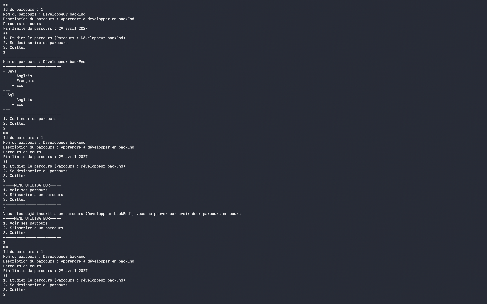
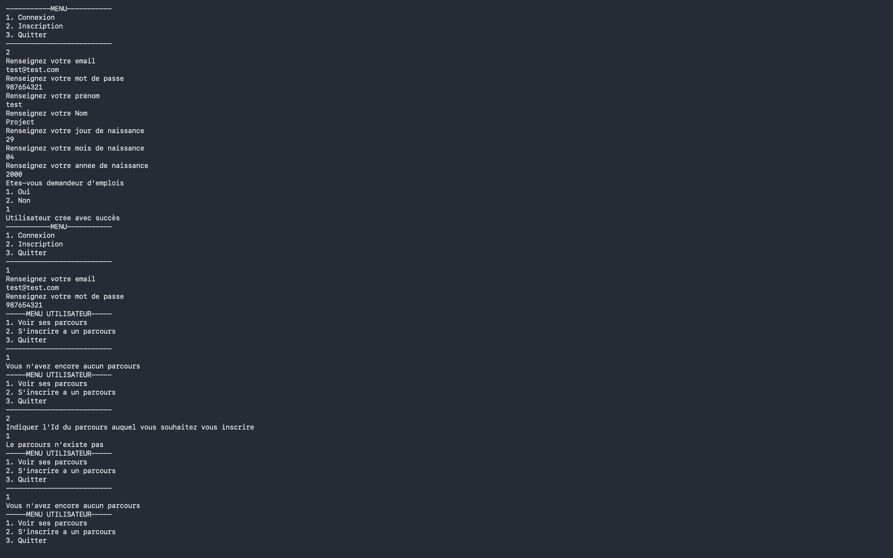
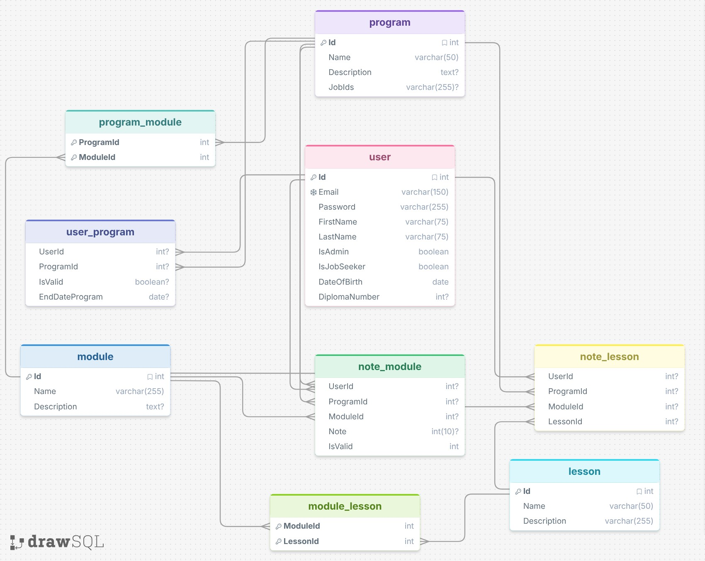

LearnIt
Plateforme de gestion des formations et inscriptions — Application console Java avec base MySQL — Projet BTS SIO SLAM (Agile/Scrum)

Captures d'écran
Défilement automatique · Naviguez avec les flèches
Vue d'ensemble
LearnIt est une plateforme de gestion des formations développée en Java avec une interface console (CLI). Elle permet aux formateurs de créer et structurer des cours, aux étudiants de s'inscrire et suivre leur progression, et aux administrateurs de gérer l'ensemble de la plateforme.
Développé en équipe avec la méthode Agile Scrum dans le cadre du BTS SIO SLAM, le projet met en œuvre une architecture MVC claire, un accès base de données via JDBC/PDO et des tests unitaires JUnit.
Application Java
Java JDK 17+ · Interface console CLI · Architecture MVC · Build Maven
Base MySQL
MySQL 8.0 · Modélisation Merise (MCD→MPD) · Accès JDBC · Requêtes préparées
Projet collaboratif
Méthode Scrum · Sprints · Backlog · Git / GitHub · Code reviews
Fonctionnalités principales
LearnIt couvre l'ensemble du cycle pédagogique : de la création de formations à l'évaluation des apprenants, en passant par la gestion des inscriptions et le suivi de progression.
- Authentification multi-rôles : Étudiant, Formateur, Administrateur
- Création et structuration de cours (modules, leçons, ressources)
- Suivi de la progression des étudiants avec tableau de bord personnalisé
- Évaluations et quiz intégrés avec notation automatique
- Gestion des inscriptions et des groupes d'apprenants
- Rapports formateur : statistiques, taux de réussite, analyse temporelle
- Administration complète : approbation de cours, gestion des utilisateurs
- Navigation au clavier intuitive avec menus contextuels selon le rôle

Gestion des modules — création et structurationConnexion & gestion des rôles

Écran de connexion — authentification par rôleLe système d'authentification distingue 3 profils avec des accès et menus entièrement différenciés. Chaque rôle dispose d'une interface console adaptée à ses responsabilités.
- Étudiant — Consulter les formations disponibles, s'inscrire, suivre sa progression, passer les évaluations
- Formateur — Créer et éditer les cours, définir les modules et leçons, consulter les statistiques de ses apprenants
- Administrateur — Approuver les cours, gérer tous les utilisateurs, accéder aux rapports globaux de la plateforme
Architecture MVC
Le projet suit l'architecture MVC (Model-View-Controller) adaptée à une application console Java. Chaque couche est clairement séparée pour garantir la maintenabilité, la testabilité et l'extensibilité du code.
- Requêtes préparées (
PreparedStatement) — protection contre les injections SQL - Pattern DAO — accès base de données isolé, facilement testable et remplaçable
- Gestion de projet Maven avec
pom.xmlcentralisé (JDBC, JUnit)
Modèle Physique de Données
La base de données a été conçue avec la méthode Merise (MCD → MLD → MPD). Le MPD final définit l'ensemble des tables, clés primaires, clés étrangères et contraintes d'intégrité.
- Tables principales :
utilisateur,formation,module,lecon - Tables de liaison :
inscription,progression,evaluation - Contraintes
CASCADEsur les suppressions pour l'intégrité des données - Index sur les colonnes de jointure fréquentes pour les performances
- Clés étrangères explicites respectant la 3NF

MPD — modélisation Merise complèteMéthode Agile / Scrum
Product Backlog
User stories priorisées par valeur métier. Backlog affiné à chaque sprint.
Sprints itératifs
Cycles courts avec livraison incrémentale de fonctionnalités testables.
Daily standups
Synchronisation quotidienne : avancement, blocages, coordination d'équipe.
Git collaboratif
Branches par fonctionnalité, pull requests et code reviews systématiques.
Rétrospectives
Bilan d'équipe à chaque sprint — identification des axes d'amélioration.
Tests JUnit
Tests unitaires sur la logique métier — non-régression assurée entre sprints.
Technologies utilisées
| Composant | Technologie | Version |
|---|---|---|
| Langage | Java | JDK 17+ |
| Interface | Console / CLI | — |
| Base de données | MySQL | 8.0+ |
| Connecteur BD | MySQL JDBC Connector | 8.0.33 |
| Build & dépendances | Maven | 3.6+ |
| Tests unitaires | JUnit | 4.13.2 |
| Modélisation BD | Merise (MCD → MPD) | — |
| Versionning | Git / GitHub | — |
Compétences mobilisées
- Concevoir une architecture MVC en Java avec séparation stricte des couches
- Implémenter le pattern DAO avec JDBC et requêtes préparées sécurisées
- Modéliser une base de données relationnelle avec la méthode Merise (MCD→MPD)
- Gérer un projet collaboratif en équipe avec la méthode Agile Scrum
- Écrire et maintenir des tests unitaires JUnit sur la logique métier
- Utiliser Maven pour la gestion des dépendances et du build Java
- Contribuer à un projet sur GitHub (branches, pull requests, code reviews)
- Concevoir une interface console intuitive avec navigation par rôles